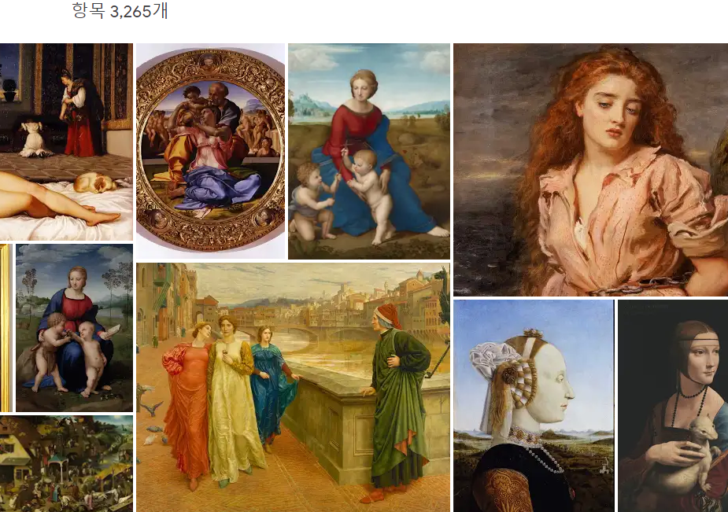

1교시:사회
교과 연계 독서 활동
지리와 관련된 도서 『80일간의 세계 일주』을 읽어 봅시다.
|
『80일간의 세계 일주』는 2만 파운드를 걸고 80일 동안의 세계 일주에 나선 영국 신사 필리어스 포그의 모험담으로, 1872년 프랑스의 《르 탕》지에 연재되자마자 폭발적인 인기를 누렸던 작품이다. 이 작품의 인기는 출간된 지 140여 년이 지난 지금까지도 이어지며 수차례 영화로 만들어졌으며, 보드 게임이나 컴퓨터 게임으로 제작되기도 했다. 후세의 유명 작가들도 이 작품에서 영향을 받았음을 고백하며 찬사를 보냈는데, 미셸 투르니에는 쥘 베른을 ‘프랑스 문학에서 가장 위대한 작가이자, 지리학자’라고 극찬했다. 프랑스의 소설가이자 극작가인 장 콕토는 쥘 베른 탄생 100주년을 기념하기 위해 포그의 여정을 따라 80일간의 세계 일주를 시도하기도 했다. 『80일간의 세계 일주』는 전형적인 영국 신사 포그와 낙천적이고 자유스러운 기질을 가진 프랑스인 하인 파스파르투, 투철한 집념으로 강도를 쫓는 픽스 형사 등 개성 넘치는 매력적인 캐릭터들의 향연이다. 또 이들이 씨줄과 날줄로 엮이면서 벌이는 갈등과 사건들은 세계라는 상상을 자극할 만한 공간과 만나 그 매력을 배가시키며 박진감 넘치게 펼쳐진다. 이야기는 영국의 한 저택에서 혼자 살아가는 차가운 성격의 필리어스 포그가 80일 만에 세계 일주가 가능한지를 두고 친구들과 내기를 벌이는 데서 시작된다. 포그는 80일 만에 일주가 가능하다는 데 2만 파운드를 걸고, 자신의 신념을 입증하기 위해 고용한 지 반나절도 안 된 하인 파스파르투를 데리고 곧바로 여행길에 오른다. 철저한 계획을 세워 여행을 시작한 포그는, 때마침 영국은행의 강도 사건의 용의자로 지목돼 형사 픽스로부터 추적을 당하게 된다. 이 과정에서 예기치 않은 사건에 맞닥뜨려 시간을 허비하는 등 갖가지 장애에 부딪친다. 무엇보다 기계처럼 냉정할 것 같은 필리어스 포그의 숨겨진 온정을 시험하는 일들이 불쑥불쑥 나타나면서 예상치 못했던 이야기의 반전을 꾀하며 손에 땀을 쥐게 한다. 이야기를 읽는 내내 독자들은 과연 이들의 80일간의 세계 일주가 가능할 것인지 긴장하며 끝까지 지켜보게 하는 묘미가 있다. 쥘 베른의 작품은 과학적인 상상력이 특징이라 할 수 있는데, 『80일 간의 세계 일주』는 과학보다는 지리적인 지식들로 가득 찬 독특한 작품이다. 런던을 출발하여 파리, 수에즈, 아덴, 뭄바이와 캘커타를 거쳐 싱가포르와 홍콩, 요코하마, 샌프란시스코와 뉴욕, 리버풀을 지나 다시 런던으로 돌아오는 긴 여로에서 쥘 베른은 여러 민족의 성격과 생활 모습, 각 지방의 풍물을 포착해 적절하게 잘 표현했다. 특히 일본의 긴코배기 서커스나 인디언 습격, 퍼시픽 철도 같은 당시 세계의 모습들은 이국적인 풍미를 불러일으키면서 이야기를 탄탄하게 전개시킨다. 이 작품 속에 묘사된 다양한 나라들의 지리와 풍속은 책을 읽는 사람들에게 미지의 세계에 대한 호기심과 더불어 여행을 떠나고 싶은 충동을 불어넣기 충분할 것이다. 또한 엄청난 폭우를 만나고, 절벽에서 기찻길이 끊기는 위기에 놓이고, 코끼리나 썰매를 타기도 하는 등 비행기를 이용하는 오늘날의 여행보다 훨씬 흥미진진하고 이색적인 여행을 책을 통해 발견하게 될 것이다. |
2교시:국어
감천 리틀빅히어로 프로젝트
2단계: 1단계에서 찾아본 코로나 사태를 막기 위해 노력하는 주변의 인물들이 구체적으로 어떤 일을 하는지 조사하고, 지금 얼마나 힘든지 공감 및 위로의 말 구상하기
양식 파일 다운 받기3교시:영어
02. How Do You Feel Today?
4교시:미술
서양화 만나기
서양의 명화들을 감상해 봅시다.

서영화 고화질 이미지 보러 가기